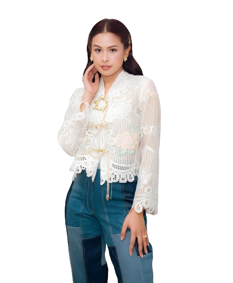
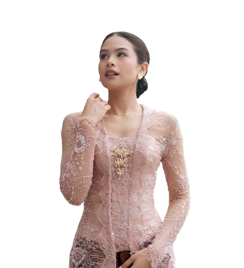

Maudy lahir dengan nama Ayunda Faza Maudya di Jakarta pada 19 Desember 1994. Ia merupakan putri sulung dari pasangan orang tua Didit Jasmedi R. Irawan dan Muren Murdjoko. Maudy memiliki seorang adik bernama Amanda Khairunnisa yang juga telah beberapa kali tampil sebagai aktris film.


Maudy Ayunda
2005–2010: Awal karier
Debutnya dalam dunia hiburan tanah air diawali lewat film Untuk Rena yang dibintanginya bersama Surya Saputra pada tahun 2005. Maudy dianugerahkan penghargaan Aktris Utama Terpilih oleh Festival Film Jakarta 2006. Tahun 2005, ia juga merilis buku pertamanya yang berjudul A Forest of Fables. Pada tahun 2009, Maudy kembali mendapatkan peran di film produksi Miles Films yang merupakan sekuel film Laskar Pelangi berjudul Sang Pemimpi.
2011–2014: Perahu Kertas dan Panggil Aku...
Pada tahun 2011, setelah memerankan anak umur 11 tahun dan gadis SMA pujaan hati di film Sang Pemimpi, Maudy Ayunda hadir dalam film karya Aditya Gumay, Rumah Tanpa Jendela. Maudy merilis album debutnya yang berjudul Panggil Aku... pada tahun 2011. Salah satu singel yang berhasil menjadi hits adalah lagu berjudul "Tiba-tiba Cinta Datang".
Pada Januari 2014, Maudy berduet dengan penyanyi yang bertempat tinggal di Amerika, David Choi dan mengeluarkan lagu berjudul "By My Side". Lagu tersebut kemudian dimasukan ke album terbaru Maudy yang dirilis pada tahun 2014. Lagu ini masuk nominasi Anugerah Musik Indonesia 2015 untuk Kolaborasi Pop Terbaik.
2015–2017: Moments
Pada 1 April 2015, Maudy merilis album keduanya yang bertajuk Moments. Album ini juga masuk dalam nominasi Album Pop Terbaik dan Album Terbaik di Anugerah Musik Indonesia 2015. Di akhir tahun, Maudy merilis singel "Jakarta Ramai" yang liriknya ia tulis sendiri. Ia juga mememangkan Indonesian Choice Awards 2015 sebagai Female Singer of The Year.
Tahun berikutnya, Maudy fokus pada kuliahnya di Inggris yang sudah memasuki semester akhir. Sepanjang tahun 2016, ia hanya merilis dua singel yaitu "Sekali Lagi" dan "How Far I'll Go" versi Indonesia yang merupakan soundtrack film Disney Moana. Pada tahun 2017, Maudy memerankan seorang penulis buku bernama Trinity dalam film arahan Rizal Mantovani berjudul Trinity, The Nekad Traveler.
2018–2020: Oxygen
Pada tahun 2018, Maudy kembali merilis album ketiganya yang berjudul Oxygen. Album tersebut dinominasikan dalam Anugerah Musik Indonesia 2018 sebagai Album Pop Terbaik. Ia juga mendapat nominasi untuk Artis Solo Wanita Pop Terbaik untuk singel "Aku Sedang Mencintaimu" dan Karya Produksi Kolaborasi Terbaik untuk singel "We Don't (Still Water)" bersama Teddy Adhitya.
Pada tahun 2019, Maudy menerbitkan dua buku cerita anak-anak yang berjudul Kina's Story. Cerita dalam buku tersebut pertana kali ditulis saat ia berusia 10 tahun, lalu ia tulis kembali sehingga menghasilkan cerita baru. Di tahun tersebut pula, Maudy dipercaya untuk memerankan Hasri Ainun Besari remaja dalam film Habibie & Ainun 3 yang disutradarai oleh Hanung Bramantyo.
2021–sekarang: The Hidden Tapes: Vol. 1
Maudy diumumkan membintangi film Losmen Bu Broto yang diadaptasi dari seri televisi Losmen. Film yang disutradarai oleh Ifa Isfansyah dan Eddie Cahyono itu tayang pada tahun 2021. Sepulangnya dari Universitas Stanford, Maudy bekerja sama dengan Kopi Kapal Api dan Redoxon mempersiapkan perilisan album mini The Hidden Tapes: Vol. 1 yang telah ia persiapkan sejak kuliah di Amerika Serikat.
Pada Maret 2022, Maudy ditunjuk sebagai juru bicara pemerintah Indonesia untuk presidensi KTT G20 yang diselenggarakan di Bali pada November 2022. 22 Mei 2022 Maudy Ayunda menikah dengan Jesse Jiseok Choi, seorang pengusaha keturunan Korea berkebangsaan Amerika Serikat yang ia temui ketika menempuh pendidikan magister di Sekolah Bisnis Pascasarjana Stanford. Penghargaan terakhir pada 30 Juni 2024 yang diterima Maudy Ayunda yaitu sebagai "Inspiring Female Artist" di R.A Kartini Award 2024.